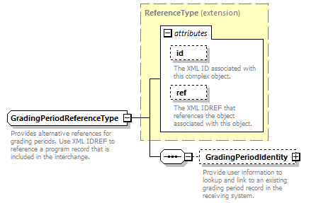
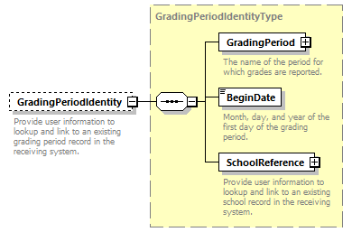

complexType
GradingPeriodReferenceType
element GradingPeriodReferenceType/GradingPeriodIdentity
| diagram |  | ||||||||||||||||||||||
| namespace | http://ed-fi.org/0200 | ||||||||||||||||||||||
| type | extension of ReferenceType | ||||||||||||||||||||||
| properties |
|
||||||||||||||||||||||
| children | GradingPeriodIdentity | ||||||||||||||||||||||
| used by | |||||||||||||||||||||||
| attributes |
|
||||||||||||||||||||||
| annotation |
|
||||||||||||||||||||||
| source | <xs:complexType name="GradingPeriodReferenceType"> <xs:annotation> <xs:documentation>Provides alternative references for grading periods. Use XML IDREF to reference a program record that is included in the interchange.</xs:documentation> <xs:appinfo> <ann:TypeGroup>Extended Reference</ann:TypeGroup> <ann:EdFiId>428</ann:EdFiId> </xs:appinfo> </xs:annotation> <xs:complexContent> <xs:extension base="ReferenceType"> <xs:sequence> <xs:element name="GradingPeriodIdentity" type="GradingPeriodIdentityType" minOccurs="0"> <xs:annotation> <xs:documentation>Provide user information to lookup and link to an existing grading period record in the receiving system.</xs:documentation> <xs:appinfo> <ann:EdFiId>2142</ann:EdFiId> </xs:appinfo> </xs:annotation> </xs:element> </xs:sequence> </xs:extension> </xs:complexContent> </xs:complexType> |
element GradingPeriodReferenceType/GradingPeriodIdentity
| diagram |  | ||||||
| namespace | http://ed-fi.org/0200 | ||||||
| type | GradingPeriodIdentityType | ||||||
| properties |
|
||||||
| children | GradingPeriod BeginDate SchoolReference | ||||||
| annotation |
|
||||||
| source | <xs:element name="GradingPeriodIdentity" type="GradingPeriodIdentityType" minOccurs="0"> <xs:annotation> <xs:documentation>Provide user information to lookup and link to an existing grading period record in the receiving system.</xs:documentation> <xs:appinfo> <ann:EdFiId>2142</ann:EdFiId> </xs:appinfo> </xs:annotation> </xs:element> |